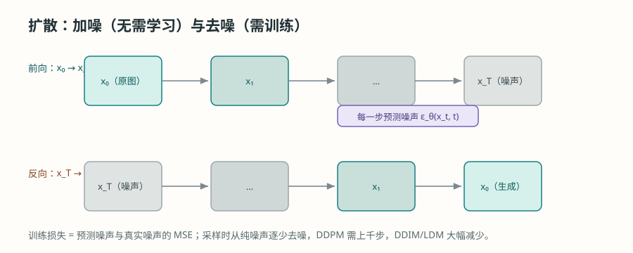
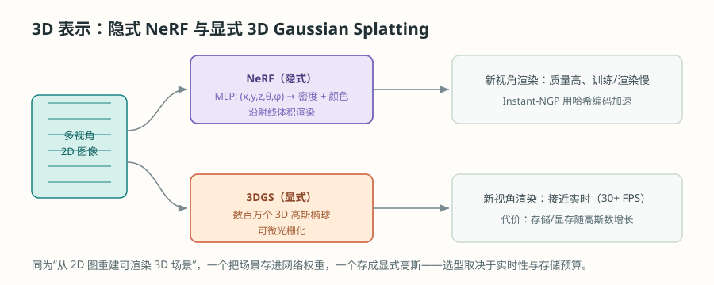

CHAPTER 27 · MULTIMODAL & GENERATIVE
多模态与生成模型概览：从扩散到 3D 表示
本章是一张技术地图：扩散模型如何用“加噪—去噪”取代 GAN，隐空间扩散为何能把采样成本压下来，视觉语言模型怎样把图像接进大语言模型，以及 NeRF 与 3D Gaussian Splatting 两种相反的 3D 表示各有什么代价。目标不是穷举模型，而是让每个名字对应一个可核查的机制。
扩散模型：加噪与去噪
扩散模型不去和判别器“对抗”，而是学习一个去噪过程。DDPM（Denoising Diffusion Probabilistic Models）（Ho 等，2020）把它分成两个方向：
- 前向过程：不断向图像加高斯噪声，经足够多步（DDPM 用
T=1000）后图像变成近似标准高斯噪声。 - 反向过程：训练一个网络从噪声出发逐步去噪，还原图像。
前向过程有一个便利的闭式表达：一步到位地从 x_0 采样出任意时刻 x_t，省去逐步迭代。设 ᾱ_t 为累乘的噪声保有系数：
网络 ε_θ 不直接预测图像，而是预测噪声；损失就是预测噪声与真实噪声的 MSE。这比直接回归像素值的任务简单得多。

import math
def forward_noise(x0, eps, alpha_bar_t):
"""x_t = sqrt(alpha_bar_t)*x0 + sqrt(1-alpha_bar_t)*eps."""
return math.sqrt(alpha_bar_t) * x0 + math.sqrt(1 - alpha_bar_t) * eps
alpha_bar = [1.0, 0.9, 0.5, 0.0] # t 越大, 原图信息越少
x0, eps = 1.0, 2.0
assert forward_noise(x0, eps, alpha_bar[0]) == x0 # t=0：完全是原图
assert forward_noise(x0, eps, alpha_bar[3]) == eps # alpha_bar=0：只剩纯噪声
signal = [math.sqrt(a) for a in alpha_bar]
assert signal[3] < signal[1] < signal[0] # 信号权重随 t 递减
print("alpha_bar=", alpha_bar, " 信号权重=", [round(s, 3) for s in signal])隐空间扩散与加速采样
DDPM 的代价是采样慢：1000 步迭代才能出一张图。DDIM（Song 等，2021）用非马尔可夫采样把步数降到几十步而基本不降质。更关键的一步是 LDM / Stable Diffusion（Rombach 等，2022）：不在像素空间扩散，而是先用 VAE 把图像编到隐空间再扩散。
以常见的下采样因子 f=8 为例：512×512×3 的图像被压到 64×64×4，像素数是原来的约 1/48。扩散在低维隐空间运行，计算量大幅下降；采样后再由 VAE 解码器还原到像素空间。这使高分辨率文生图在消费级 GPU 上变得可行，也自然支持文本等条件控制。
视觉语言模型：如何把图像接进 LLM
生成模型负责“文→图”，视觉语言模型（VLM）则做“图→文”的理解与对话。早期 VLM 分两派：双塔（如 CLIP、ALIGN）擅检索但缺细粒度理解；融合编码器（如 UNITER、ViLBERT）理解强但计算重。BLIP（Li 等，2022）用字幕滤波（caption filtering）——先用噪声图文数据训练，再用模型生成高质量字幕来清洗/增强数据，形成自改进循环。
LLaVA（Liu 等，2023）给出了一个极简而有效的连接方案：预训练的视觉编码器（CLIP ViT）→ 一个线性投影层 → 大语言模型。视觉特征被投影到 LLM 的 embedding 空间，与文本 token 拼在一起输入 LLM，从而获得多模态对话与推理能力。GPT-4V / GPT-4o 则代表了商业 VLM 的当前水位。

3D 视觉：隐式 NeRF 与显式 3DGS
前面都是 2D。3D 重建的两个代表方法恰好代表了两种相反的表示思路。
NeRF（Neural Radiance Fields）（Mildenhall 等，2020）是隐式表示：用一个 MLP 把 3D 点与观察方向 (x, y, z, θ, φ) 映射到该点的密度与颜色，再沿射线做体渲染合成像素。给定多视角 2D 图像即可学出连续场景，并能从新视角渲染。其代价是训练慢、渲染慢（每帧需沿射线积分多个点）；Instant-NGP 用多分辨率哈希编码把训练时间大幅缩短。
3D Gaussian Splatting（3DGS）（Kerbl 等，2023）是显式表示：不学 MLP，而直接用数百万个 3D 高斯椭球建模场景，用可微光栅化渲染。它能在保持接近 NeRF 质量的同时实现实时新视角渲染，代价是存储与显存随高斯数量增长。

未完成的挑战
分类精度超过人类、生成效果逼真、模型趋通用化——但这些进展并未消除根本难题：
- 鲁棒性：对人眼不可感知的对抗扰动就能让最先进分类器出错，自动驾驶、医疗等安全关键场景尚未真正解决。
- 可解释性：Grad-CAM、注意力图只能给出粗略归因；医疗场景需要的“为什么这里是病变”仍未被满足。
- 少样本：CLIP、SAM 缩小了与人类“看一两张就会”的差距，但未消除。
- 长尾与持续学习：现实分布严重不均，罕见类表现差；学会新类时旧类可能被灾难性遗忘（第 24 章）。
- 具身智能：当前 CV 多为被动的“观察者”，尚未真正进入“看得见又动得了”的闭环。
检查理解：为何扩散模型在像素空间训练稳定，却要搬到隐空间去做？
稳定性与生成位置是两件事。扩散的损失是一个简单的 MSE，不需要 GAN 那样的对抗平衡，所以训练本身稳定。但直接在高分辨率像素上做 1000 步去噪的推理成本太高。LDM 先用 VAE 把图像压到低维隐空间（如 1/48 像素量）再扩散，把昂贵的迭代从像素空间移到小得多的隐空间，采样后再解码回像素，从而在消费级硬件上也能生成高分辨率图像。
原始资料与口径
本页的扩散模型、隐空间扩散、BLIP/LLaVA、NeRF 与 3D Gaussian Splatting 均以对应原论文为准；采样步数、压缩比、生成质量等为特定配置下的典型值，本页不将其作为跨模型的排名依据。
- Denoising Diffusion Probabilistic Models (DDPM, arXiv:2006.11239) · Denoising Diffusion Implicit Models (DDIM, arXiv:2010.02502)
- High-Resolution Image Synthesis with Latent Diffusion Models (LDM / Stable Diffusion, arXiv:2112.10752)
- BLIP: Bootstrapping Language-Image Pre-training (arXiv:2201.12086)
- Visual Instruction Tuning (LLaVA, arXiv:2304.08485)
- NeRF: Representing Scenes as Neural Radiance Fields for View Synthesis (arXiv:2003.08934)
- 3D Gaussian Splatting for Real-Time Radiance Field Rendering (arXiv:2308.04079) · Instant Neural Graphics Primitives (arXiv:2201.05989)